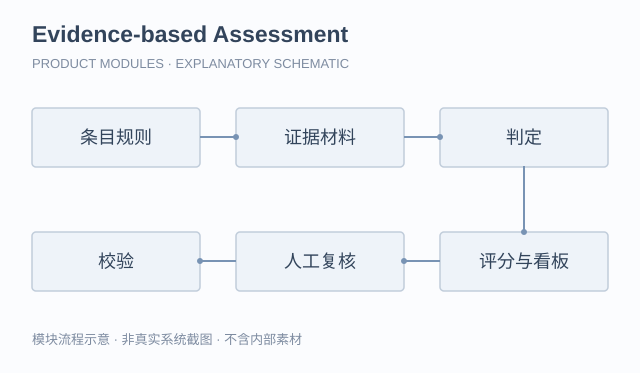

ByteDance · 字节跳动工作经历 / 领域 AI 产品实践
标准化线上平台
独立负责人 · 0—1 自主搭建 · 试点使用 · 配置化复用
负责技术标准应答与偏离评审平台的产品设计，包括标准规则库、评审工作台、智能判定、风险评分和权限管理等核心模块，将原本依赖表格和邮件流转的评审流程线上化，推动平台在试点项目中使用。
项目成果
- 0—1 搭建：将技术标准应答和偏离评审从表格、邮件流转转为线上工作台，推动平台在试点项目中使用。
- 智能判定：设计“判定＋校验”两层机制；给出等级、理由与引用条款，证据不足或低置信时转人工复核。
- 风险与复用：贯通五级状态评分、维度加权和风险看板，通过配置化规则与统一接口支持多项目复用。
场景与产品职责
原有评审依赖表格和邮件流转，不同项目口径不一致；需要把标准条目、证据、偏离等级、责任人及评审状态组织到统一工作台。
标准规则库
将技术标准拆解为条目级规则，明确每条规则的适用范围、证据要求、偏离等级和责任人，支持规则维护与多项目复用，解决不同项目评审口径不一致的问题。
评审工作台
设计任务创建、材料提交、状态流转、补充说明、结果确认和操作留痕等功能，统一多角色协作入口，使评审过程从线下表格流转转变为线上可追踪流程。
智能判定与复核
设计“判定＋校验”的双层评审机制：判定模块输出偏离等级、理由和引用条款，校验模块核验证据是否充分；当证据不足或结果置信度较低时，自动转入人工复核，保证高风险结论可追溯、可确认。
风险评分与决策看板
打通标准应答、偏离评审、五级状态评分和风险评级流程，按不同维度独立评分后加权汇总，形成项目风险看板，让原本主观的评审结果变得可量化、可复算。
试点运营与复用
收集试点项目反馈，持续优化规则口径、提示词和评分量表；通过配置化规则和统一接口支持多项目复用，将平台从单项目试用沉淀为可复制的标准化评审流程。
关键取舍
- 将判断与证据校验分成两层，避免模型理由替代真实证据。
- 证据不足或低置信结果转人工复核，不强制自动给出高风险结论。
- 分维度独立评分后加权汇总，规则与评分配置化以支持复用。
产品流程示意（非系统截图）

证据与公开边界
职责、搭建与试点状态依据本人履历；项目名单、原始评审材料、评分权重和使用规模未公开，不补造试点数量或结论采纳率。
公司归属和工作经历性质经本人确认。正式职位、团队和日期未提供，不补写。所有职责与指标为本人提供并确认可公开的履历；本页不公开内部代码、图纸、客户数据、真实系统截图或原始统计。